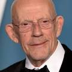

De Volta para o Futuro II é um filme estadunidense de ficção científica de 1989 dirigido por Robert Zemeckis e escrito por Bob Gale, sendo a sequência direta de De Volta para o Futuro (1985) e a segunda parte da trilogia homônima. O filme é estrelado por Michael J. Fox, Christopher Lloyd, Thomas F. Wilson e Lea Thompson. O filme segue Marty McFly (Fox) e seu amigo Doutor Emmett "Dr." Brown (Lloyd), que viajam de 1985 a 2015 para evitar que o filho de Marty estrague o futuro da família McFly; seu arqui-inimigo Biff Tannen (Wilson) rouba a máquina do tempo DeLorean de Doc e usa-a para alterar a história em seu benefício, forçando a dupla a retornar a 1955 para restaurar a linha do tempo.
Michael J. Fox
Michael Andrew Fox, conhecido profissionalmente como Michael J. Fox, é um ator e ativista canadense e americano. Iniciando sua carreira como ator mirim na década de 1970, ele ganhou destaque interpretando Alex P. Keaton na série de comédia Family Ties da NBC e Marty McFly na trilogia de filmes De Volta para o Futuro.

Christopher Lloyd
Christopher Allen Lloyd é um ator americano. Ele apareceu em muitas produções teatrais, filmes e programas de televisão desde a década de 1960. É conhecido por interpretar Emmett Brown na trilogia De Volta para o Futuro e Jim Ignatowski na série de comédia Taxi, pela qual ganhou dois prêmios Emmy.
Lea Thompson
Lea Katherine Thompson é uma atriz, cantora, dançarina e diretora americana. Ela é mais conhecida por seus papéis como Lorraine Baines-McFly na trilogia de filmes De Volta para o Futuro, Beverly Switzler em Howard, o Super-Herói, e Amanda Jones em Alguém Muito Especial.
Video Game Boy #1
Elijah Jordan Wood é um ator e produtor americano. Wood fez sua estreia no cinema com uma pequena participação em De Volta para o Futuro Parte II, aos oito anos de idade, e ganhou reconhecimento no início dos anos 1990 como ator mirim, com papéis em filmes como Avalon, Para Sempre Jovem, O Anjo Malvado e As Aventuras de Huck Finn.
Elisabeth Shue
Elisabeth Shue é uma atriz americana. Ela estrelou filmes como Karatê Kid, Uma Noite de Aventuras, Coquetel, De Volta para o Futuro Parte II, De Volta para o Futuro Parte III, Creme de Sociedade, Despedida em Las Vegas, O Santo, O Homem Sem Sombra, Piranha 3D, A Guerra dos Sexos, Desejo de Matar e Greyhound: Na Mira do Inimigo.
Thomas F. Wilson
Thomas Francis Wilson Jr. é um ator, comediante stand-up, músico, podcaster e youtuber americano. Ele é mais conhecido por interpretar Biff Tannen, Griff Tannen e Buford "Mad Dog" Tannen na trilogia de filmes De Volta para o Futuro.
Ir para o primeiro filme | Ir para o terceiro Filme | Voltar para a página inicial
Para mais informações: Wikipédia